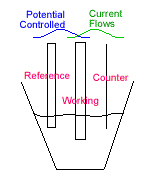

Chemical Sciences →Physical Chemistry Lab →List Of Experiments
Construction of a Electrochemical Cells (Cyclic Voltammetry):
During the experiments, the potential is scanned between two extreme potentials in a linearly with respect to time. When an negative potential is applied to the electrode, the electrons go form the electrode to the solution, and the analyte present in the solution is reduced. Similarly, on the return scan, as the working electrode potential becomes more positive and the reverse reaction occurs (electrons goes from the solution to the electrode) and the analyte is oxidized. By convention, the cathodic currents are positive and anodic currents are negative.

Schematic of the molecular process of diffusion to and from and electron transfer at the electrode surface for an analyte
http://onlinelibrary.wiley.com/doi/10.1002/9780470118443.app2/pdf
Both the oxidation and the reduction of the analyte takes place in the same electrochemical cell with respect to the applied potential. At the working electrode surface the electron is transfer to and from the analyte. The movement of the analyte to and from the electrode surface produces current. Cyclic voltammogram gives the potential vs current. The reduction potential of a half cell in an electrochemical cell is given by Nernst equation.
Nernst equation: http://en.wikipedia.org/wiki/Nernst_equation
The significant parameters of a cyclic voltammogram:
1. The cathodic peak current (Ipc)
2. The cathodic peak potential (Epc).
3. The anodic peak current (Ipa)
4. The anodic peak potential (Epa)

Peak Current (Ip):
If the rate of the electron transfer step is fast compared to the rate at which the analyte is transported (diffuses) from the bulk solution to the electrode surface due to a concentration gradient the peak current, Ip, is governed by the Randle-Sevcik
relationship
Ip = k n3/2 A D1/2 Cb υ 1⁄2
where
k = 2.72 x 105; n is the number of moles of electrons transferred per mole of electroactive species; A = area of the electrode in cm2;
D= diffusion coefficient in cm2/s;
Cb = solution concentration in mole/L;
υ = scan rate of the potential in volt/s.
Peak Potential (Ep):
One among the characteristic feature of the electrode reaction is the measure of peak potential Ep.
The electrode reaction is reversible if the rate of the electron transfer is fast and independent of the scan rate. The difference between the two peak potential is equal to 59mV/n for a reversible condition.
Reduction scan:
As the potential is scanned in a negative direction, the electron supplied by the electrode
becomes an increasingly stronger reducing agent. A cathodic current occurs when an
electron supplied by the electrode is energetic enough to reduce the analyte.
The cathodic current increases rapidly until the concentration of analyte
approaches zero at the electrode surface. At this point, the current reaches a maximum value . The current then decays at a rate of t -1/2 as the solution adjacent to the electrode surface is
depleted of analyte having been reduced.
The scan direction is switched in the positive direction for the reverse scan. As the
applied potential becomes more positive versus the reference electrode, the electrode becomes
an increasingly powerful oxidizing agent. Now the reduced species, which has been generated at
the electrode surface by the preceding reduction reaction, can now be oxidized back . This generates anodic current, which rapidly increases until the surface concentration of reduced species approaches zero. The current then peaks and decays as the solution adjacent to the electrode is depleted of reduced species. The first cycle is completed when the potential reaches to start potential.
 |
|  |
Picture source: http://www.kutztown.edu/acad/chem/instruments_html/electrochemistry.htm
Criteria for a reversible reaction:
For a reversible electrochemical reaction the CV recorded has certain well defined characteristics.
I) The voltage separation between the current peaks is

II) The positions of peak voltage do not alter as a function of voltage scan rate
III) The ratio of the peak currents is equal to one

IV) The peak currents are proportional to the square root of the scan rate

Sample preparation:
- The electrochemical cell is dried completely at high temperature and mounted to the stand with the lid
- The cell is evacuated and filled with Nitrogen/Argon gas for two to three times
- 20 mL of the solvent (completely dried and degassed with argon) is added to the cell.
- All the three electrodes are polished and introduced into the cell in Nitrogen/Argon atmosphere
- Background current is recorded
- Weighed sample and the electrolyte are added against Nitrogen/Argon flow (10-4 M of the substance under study and 10-4 M of electrolyte).

Four components of the electrochemical cell: Sample vial, electrodes (working, counter and reference electrodes), teflon cap and gas purging tube
Picture source: http://www.als-japan.com/1022.html